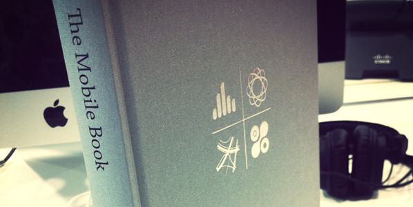
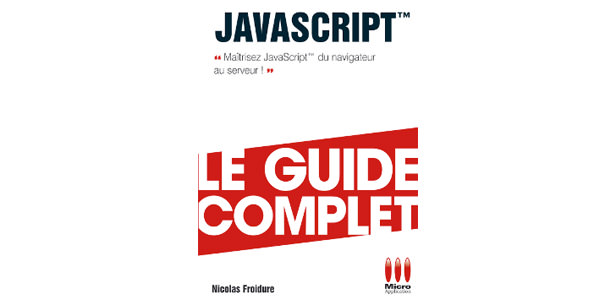

Journal de bord d’un développeur web
spécialisé front-end
La meilleure façon de maîtriser un sujet est de l’enseigner aux autres
- Introduction à JAMstack : JavaScript, API et Markup
- FOSDEM 2017
- 30 jours en Indonésie : trekking, snorkeling & nasi goreng
- Devenir expert en Digital Marketing grâce à la certification Google
- GitShot — timelapse vidéo de chaque commit
- Configurer les valeurs par défaut de Node.js
- Gagne ta place Early-bird pour la prochaine takeoffconf
- 3 astuces pour un webdesign mobile first évolutif
- Helper pour les images SVG avec Ruby on Rails (ou Middleman)
- Devenir intégrateur web en 6 mois
- 4 mois sans internet
- Ateliers Paris Web 2015 : accessibilité, design numérique & standards ouverts
- 1 an de code en chiffre : 500h, expert Ruby Slim & Sass
- Sass truncate mixin pour ajouter ... à vos textes
- Font, prototype & wireframe
- Sass & typographie, une solution élégante
- Améliorer le chargement CSS & JavaScript des pages web
- Améliorer la rapidité et la qualité d’un site internet
- 10 plugins Sublime Text pour développeurs front-end
- Centrer des éléments impairs avec une grille CSS
- Mixin Foundation 5.5
- FOSDEM 2015
- Guide pour la prise de notes visuelles
- J’ai testé les ateliers de Paris Web 2014
- Coder du HTML plus rapidement grâce au templating
- Guide d’installation de Sublime Text
- 5 bonnes raisons pour commencer un projet avec Foundation
- Astuce raccourcis GitHub
- Enquête métier développeur & intégrateur web
- Solutions aux problèmes @import des fichiers Sass
- Performance site internet : Astuces et bonnes pratiques
- Migration de Wordpress vers ruby et Middleman
- Proposition de redesign du louvrelens.fr
- La mediaquery du 01 Avril
- Astuces et conseils de développeur web front-end
- Pourquoi créer un site web avec Photoshop n’est pas efficace ?
- Encourager la participation des clients en responsive design
- Foundation 5 architecturer ses fichiers Interchange
- Takeoff conference 2014 résumé en une image
- Foundation 5 snippet HTML pour Sublime Text
- Foundation 5, interchange et Google maps
- Générer automatiquement ses favicon
- Augmenter sa productivité en 2014 avec Firefox
- Comment rédiger un briefing créatif
- Modifier les breakpoints de Foundation
- Différence entre internet et web
- Maitriser rapidement JavaScript
- Hébergement site internet gratuit avec un nom de domaine chez OVH
- Astuces et bonnes pratiques pour un CSS évolutif
- Definition webdesign responsive
- Site web responsive ou application native ?
- hackathon firefoxOS
- Takeoff conference 2013
- Zend studio la todo list ultime après une nouvelle installation
- Formation du print vers le web
- Comment choisir entre un lien et un bouton ?
- Test hackathon open du web #3 à Lille
- Quel est le tarif horaire d'un webdesigner ?
- Afficher l’installation de votre application sur mobile
- 8 questions à se poser pendant la création d'un brief créatif
- 4 questions à se poser pendant la création de wireframe
- Twitter a changé votre vie ? essayez Lift
- Prix d'un site internet compatible mobile
- Typographie : 6 Combo de polices web avec google font
- Créez rapidement votre portfolio en 6 étapes
- iGoogle va fermer : sauvez vos flux RSS !
- Icone pour vos applications web mobiles
- 7 bonnes pratiques pour des emails de qualité
- Astuce Windows : changer le répertoire par défaut de git
- Webdesign adaptatif : 5 astuces indispensables
- Photoshop afficher la grille des pixels
- Guide pour les auto-entrepreneurs
- Mesurer les pixels de l'écran
- Déclaration pour obtenir un SIRET
- Choix du framework Symfony, CodeIgniter, cakePHP, or FuelPHP ?
Recevoir gratuitement des conseils sur les technologies front-end
Lire le contenu dans une autre application, ou en mode hors-ligne
Suivez @_flexbox sur Twitter pour obtenir les dernières mises à jour
Sources
Ce contenu est produit à partir d’expériences personnelles, MDN, et la documentation officielle.
Blogposts
tech.siliconsalad
Les prefixes css avec Ruby on Rails
webdesign.tutsplus
Méthode pour travailler avec Sass et Foundation
code.tutsplus
Astuce débutant jQuery : On ne saute pas dans la piscine
Contribuer
Vous avez trouvé un article qui peut être amélioré ?
Bravo !
Vous pouvez soumettre une demande de modification sur Github.
Conseils de lecture
Je suis autodidacte. J’ai remarqué que la lecture sur le web favorise le butinage. En lisant un livre, vous êtes plus concentré pour retenir leurs notions.
- 


- 